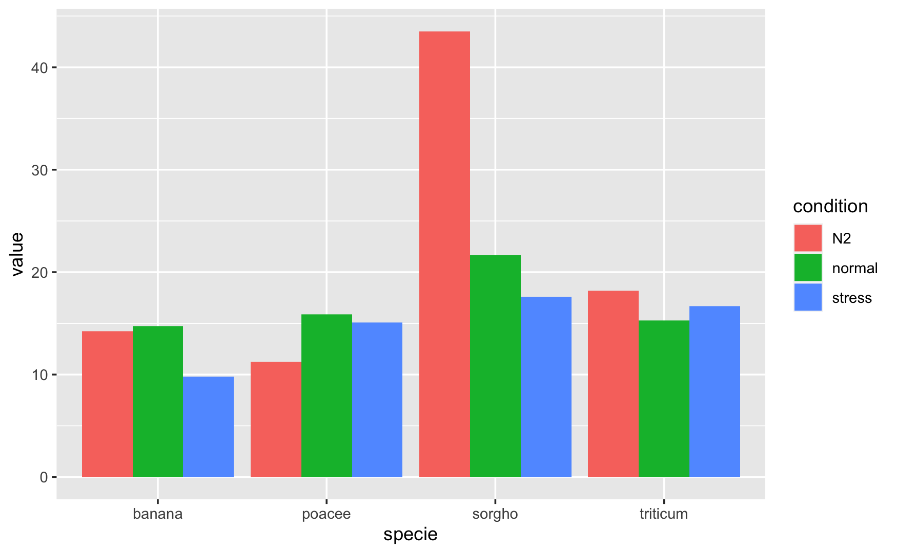
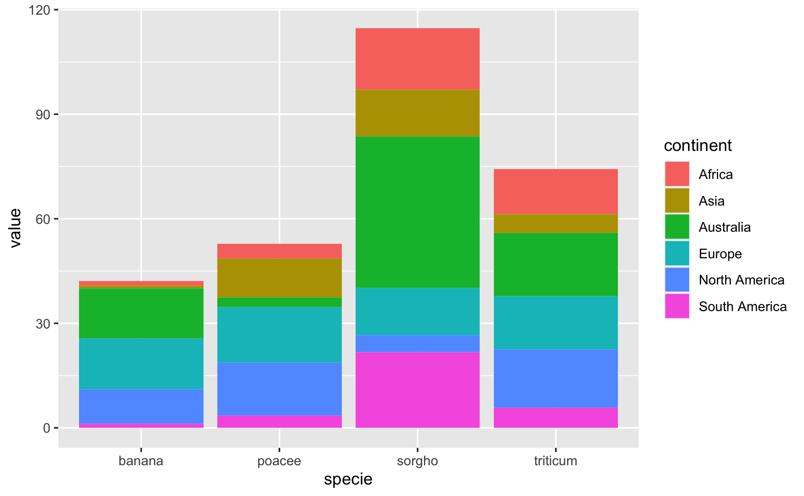
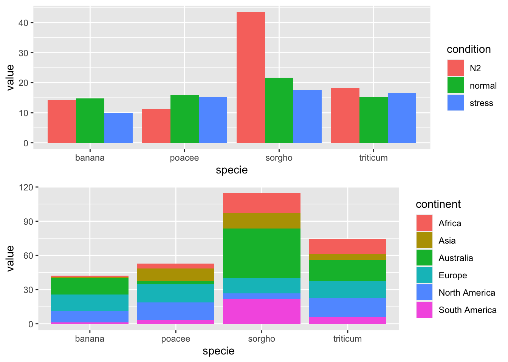
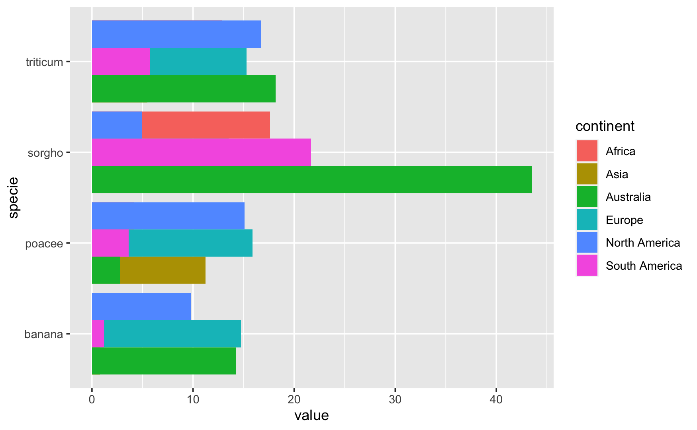
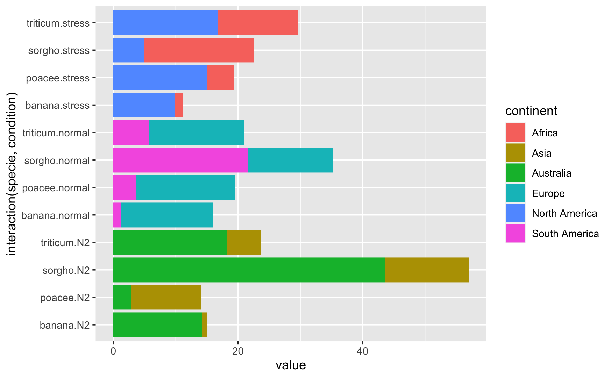
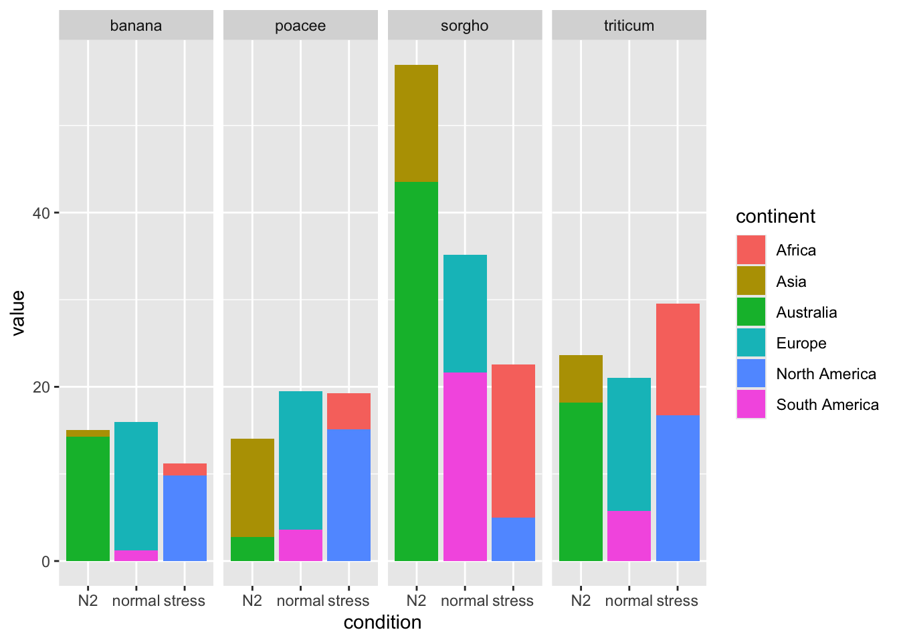
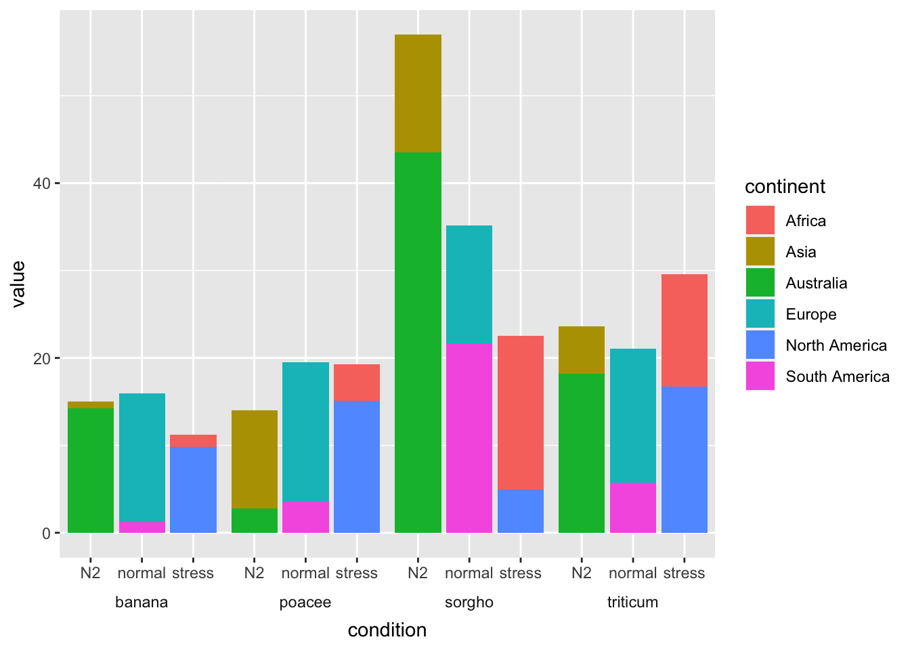

library(ggplot2)
set.seed(2022)
specie <- c(rep("sorgho", 6), rep("poacee", 6),
rep("banana", 6), rep("triticum", 6))
condition <- rep(c("normal" , "stress" , "N2") , 8)
continent <- rep(c("Europe", "Africa", "Asia", "South America",
"North America", "Australia"), 4)
value <- abs(rnorm(24 , 0 , 15))
data <- data.frame(specie, condition, continent, value)
head(data)Grouped and Stacked Bar Charts in R
R
R: tidyverse
R: ggplot2
Using R and ggplot2 to create stacked and grouped column charts
Intro
Sometimes you have a chart that looks like one of these. You have a grouped chart that shows one thing and a stacked chart that shows another. But you really want to show the continent of origin and the condition in one chart.


Maybe the chart you want looks a lot like this:

Creating the Data
First we load ggplot2 so we can make our charts. Then we make some data and preview it. set.seed(2022) makes sure that our data is the same every time.
| specie | condition | continent | value | |
|---|---|---|---|---|
| 1 | sorgho | normal | Europe | 33.2982559377826 |
| 2 | sorgho | stress | Africa | 7.4199245988712 |
| 3 | sorgho | N2 | Asia | 52.3689859681817 |
| 4 | sorgho | normal | South America | 4.85975695583929 |
| 5 | sorgho | stress | North America | 6.84424418650998 |
| 6 | sorgho | N2 | Australia | 6.74199859289553 |
Not Quite Right
Our first instinct might be to throw both charts together using grid.arrange from the gridextra package. While this does show the information we want, it’s not pretty and doesn’t show the data the way we want it to.
one <- ggplot(data) +
geom_bar(aes(x = specie, y = value, fill = condition),
position = "dodge", stat = "identity")
two <- ggplot(data) +
geom_bar(aes(x = specie, y = value, fill = continent),
position = "stack", stat = "identity")
gridExtra::grid.arrange(one, two, nrow = 2)
Not sure what to do, we come up with lots of plots that are almost right, but not quite.



The last one looks like it could be promising. How did we do it?
ggplot(data) +
geom_bar(aes(x = condition, y = value, fill = continent),
position = "stack",
stat = "identity") +
facet_wrap(~ specie)We use ggplot to set up the pipeline, geom_bar to create the bar chart, and then facet_wrap is what gives us the four separate charts in one, with one mini-chart for each species. If we can move the charts to be side-by-side, we’ll be a lot closer to the desired outcome. We can use facet_grid instead of facet_wrap to accomplish that.
ggplot(data) +
geom_bar(aes(x = condition, y = value, fill = continent),
position = "stack",
stat = "identity") +
facet_grid(~ specie)
This looks much better, but we want it to look like one cohesive plot, rather than four smaller plots.
The Final Product
I’m going to show you the code that does it, then walk through it so everything makes sense.
ggplot(data) +
geom_bar(aes(x = condition, y = value, fill = continent),
position = "stack",
stat = "identity") +
facet_grid(~ specie, switch = "x") +
theme(strip.placement = "outside",
strip.background = element_rect(fill = NA, color = "white"),
panel.spacing = unit(-.01,"cm"))
This looks pretty good and is exactly what we wanted. Like the charts before, we get 90% of the way there with ggplot, geom_bar, and facet_grid. The additions here are the switch = "x" argument in facet_grid, which moves the group panel with the species from the top of the chart to the bottom. Moving the strip.placement outside makes sure that the conditions are listed between the species and the chart. Making strip.background empty with a white border allows the group panel with the species to blend in with the white background of the chart. Lastly, changing the panel.spacing to -.01 removes the small gap between each panel so that the chart appears to be one cohesive unit.
The code for all the charts in this article is available here. If you want to see more from me, check out my GitHub or guslipkin.github.io. If you want to hear from me, I’m also on Twitter @guslipkin.